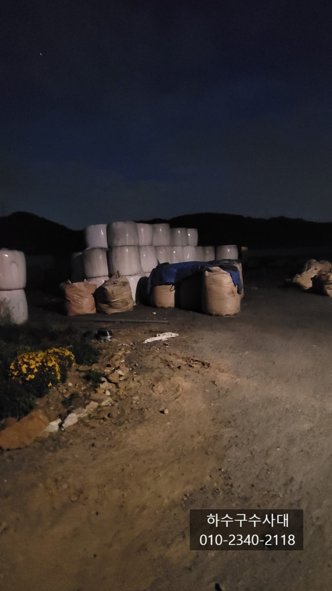
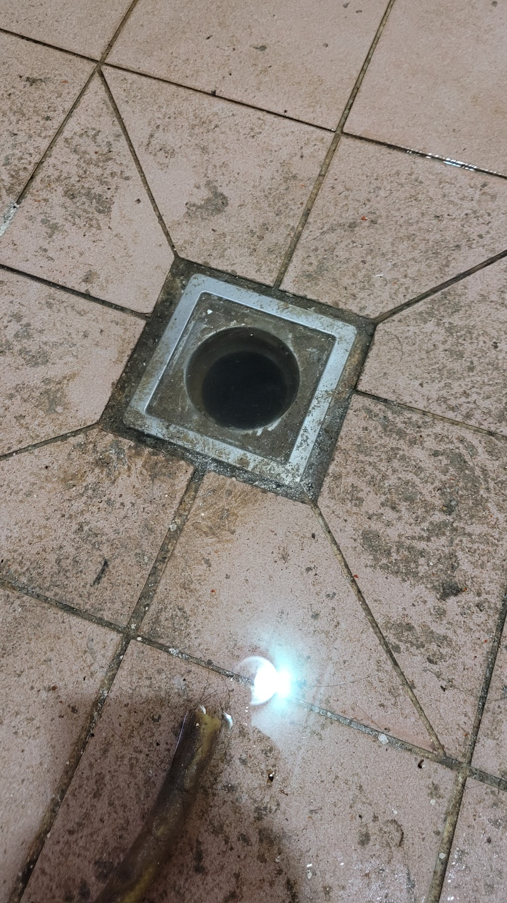
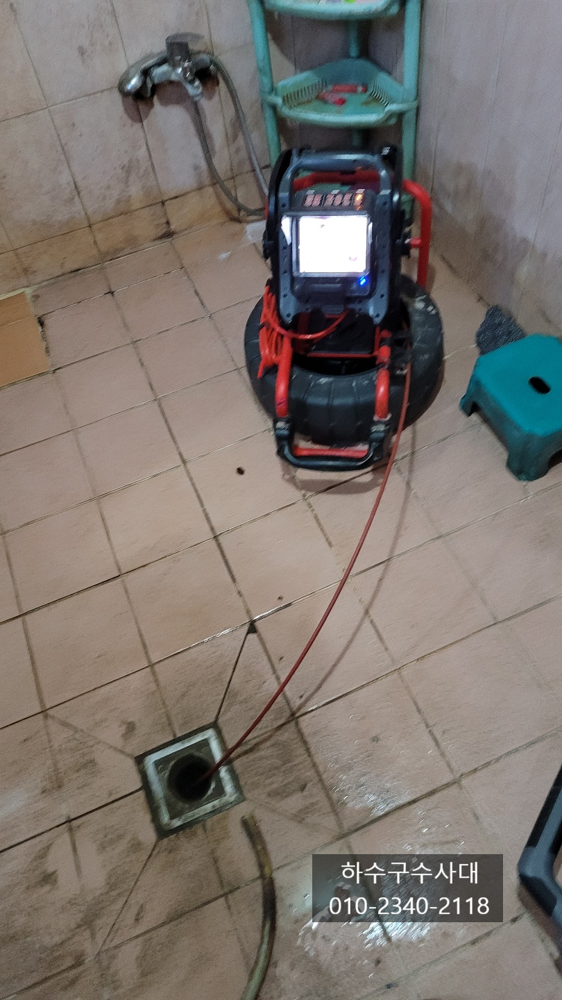
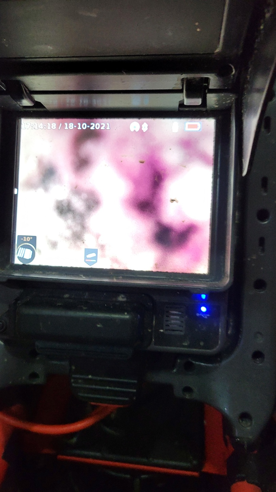
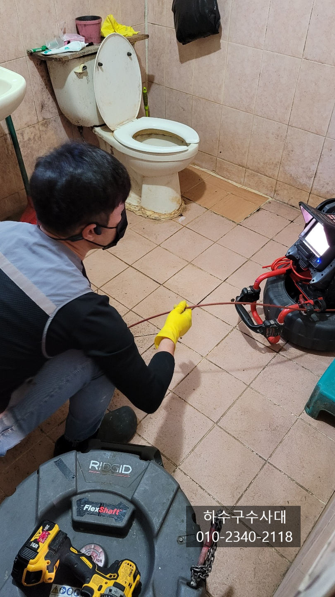
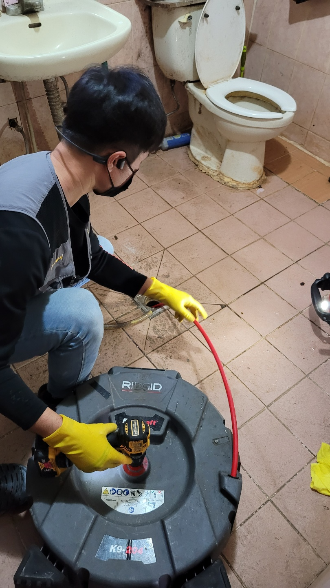
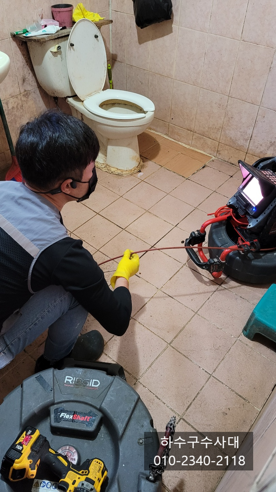

🏠 처인구하수구막힘 역북동 중앙동 유림동 하수구막힘
서울 중앙동 싱크대막힘 전문 시공 후기

📋 작업 개요
- 위치: 서울 중앙동, 중앙동, 서울
- 서비스 유형: 싱크대막힘, 하수구막힘, 배관막힘, 뚫는업체
- 작업 일시: 2021. 10. 23. 1:05
- 업체명: 하수구수사대 (010-5615-2118)
🔍 문제 상황
처인구하수구막힘 역북동 중앙동 유림동 하수구막힘
안녕하세요 오늘은 처인구에 위치한
농장을 다녀왔습니다.
하수구가 막혀 욕실에서 물이
내려가지 않는 상태였습니다.
소를 키우는 농장인데요 직원들이 사용하는
숙소 욕실에서 물이 내려가지 않아 씻지도
못하고 많은 불편을 겪고 계셨어요.
슬기로운하수구생활
010-2340-2118
내시경카메라를 투입하여 보니 기름슬러지 덩어리가
막고 있는것이 보입니다.

🔎 원인 분석
💡 전문가 진단: 슬기로운하수구생활010-2340-2118
아마도 외국인노동자분들이 싱크대에 음식물을
넣다보니 기름덩어리가 쌓여 막힌거 같습니다.
배관도 길다보니 구배도좋지않아 물이 고여있는
구간도 있기에 관리를 하지않으면 기름덩어리가
쌓이는건 시간문제입니다.
장비를 투입시켜 통수작업과 함께 배관에 붙어있는
기름덩어리를 제거해 주는 작업을 진행하였습니다.
배관크기도 크기때문에 기름덩어리 또한 크게 붙어 있어
여러번의 반복작업이 필요한데요 다행히
기름덩어리가 너무 딱딱하지는 않아 충분히
갈아서 흘려보낼수 있었습니다.
예전이나 요즘도 배관이 막히면 스프링같은

🔧 작업 과정
간단한 장비로 뚫기도 하지만 막힘의 원인이 무엇인지
모르고 막힐때 마다 뚫게 되면 비용이 반복적으로
발생하게 되는데요 결국 원인을 제거하는 작업을
해야하는 비용까지도 발생하게 됩니다.
특히나 음식물이 지나가는 하수배관은 좀 더
확실하게 처리를 하는게 좋습니다.
하수배관은 보통은 기름슬러지가 오랜기간 끼어
덩어리가 되는 경우도 있고 배관에
이물질이 들어가 막히는경우 또는 배관이 오래되어
깨지거나 무너지는 경우도 있습니다.
반복적으로 막힌다면 원인을 제거해주는 것이 좋습니다^^
화면을 보시면 구배가 좋은곳과 좋지않은곳의 차이점을 볼수
있는데 바로 물이 고여있는것입니다.
물이 고이게되면 기름들이 물에떠서 배관에 붙게 되면서
조금씩 덩어리가 됩니다.
이를 예방하기 위해서는 펑크린같은 세정제를
주기적으로 배관에 넣어 기름을 제거하는것이
효과적입니다.
최종적으로 하수구물이 나오는 배관에서 물이 잘 나오는지
보았는데요 이미 밖으로 기름덩어리 큰녀석이 흘러 나왔습니다.


✅ 작업 완료
배관안에서도 물이 잘 흘러나갑니다^^
하수구수사대는 서울,경기,인천 전지역에서
활동중이며 막힘증상으로 고민이시라면
언제든지 연락주세요
하수구수사대




⚠️ 주방 싱크대 배관 막힘 예방 수칙
- ✅ 기름기가 묻은 식기나 프라이팬은 설거지 전 키친타올로 반드시 기름때를 닦아내세요.
- ✅ 주기적으로 싱크대 개수대에 뜨거운 물을 가득 받아 한 번에 내려 배관 내부 기름을 씻어내세요.
- ✅ 배수구 거름망을 미세한 필터로 사용하시고 음식물 찌꺼기가 틈으로 새어 들지 않게 관리하세요.
- ✅ 베이킹소다와 식초를 뜨거운 물과 함께 일주일에 한 번씩 부어주면 배관 살균과 막힘 예방에 좋습니다.
💡 핵심 정리
- 확실한 장비 작업(내시경 점검 및 샤프트 스케일링)으로 원인을 뿌리 뽑습니다.
- 작업 후 1년 이내에 동일한 부위 재발 시 100% 무상 A/S 서비스를 보장합니다.
- 서울 · 경기 · 인천 전 지역에 24시간 언제든 긴급 출동할 수 있도록 항시 대기 중입니다.
❓ 자주 묻는 질문 (FAQ)
🚨 서울 중앙동 싱크대막힘 문제로 고민이신가요?
정확한 원인 진단과 확실한 시공으로 재발 없는 해결을 약속드립니다.
24시간 긴급 출동 | 서울 · 경기 · 인천 전지역 | 1년 내 재발 시 무상 A/S